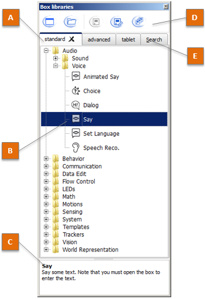
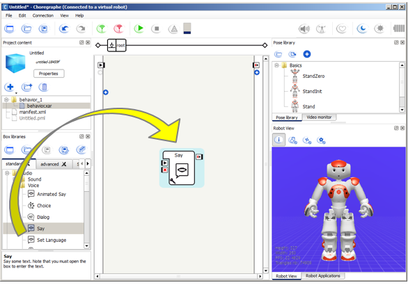
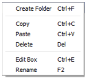

Box libraries panel¶
Box libraries panel¶
The Box libraries panel displays the currently opened Box libraries:
The table below describes the main parts of the Box libraries panel:
| Part | Name | Description |
|---|---|---|
| A | Tabs | Displays all opened Box libraries. Click on a tab to display all the boxes included in the selected Box Library. For further details, see: Default Box libraries. |
| B | Selected Box | Each Box is represented with its name and its image. For further details, see: How to use a Box library panel. |
| C | Description | Displays the description of the selected box. |
| D | Toolbar | Allows managing Box libraries. For further details, see: Toolbar. |
| E | Search | Allows you to search a specific box among all the opened box libraries. |
How to use a Box library panel¶
You can drag and drop any of the boxes contained in a Box library onto the Flow diagram panel to enrich a Behavior or a Box.
Toolbar¶
| Button | Click on this button to ... |
|---|---|
 |
Create a new Box library. For further details, see: Creating a customized Box library. |
 |
Open an existing Box library. For further details, see: Opening a Box library. |
 |
Save the current Box library. |
| Save the current Box library using a new name, path and/or format. | |
 |
Save all the Box libraries currently opened. |
What is a Box library¶
A box library consists of a list of Boxes.
This list can be organized with directories.
Each box may have attached files (music, image, etc) also included in the box library.
A box library is particularly useful when you often use the same boxes. You can store it in a box library and use and reuse it later.
Default Box libraries¶
Opened by default, and read-only box libraries:
- standard: contains all the elementary boxes you need to create your first behaviors.
- advanced: offers advanced alternative to standard boxes in order to go further in mastering behaviors.
- tablet: contains boxes specific to Aldebaran robots with a tablet such as Pepper.
Also available:
- deprecated: lets you know which boxes has been deprecated since the last release.
Box library available formats¶
You can save / open a Box library as:
- a single compressed file with a CBL extension (ex: MyLibrary.cbl). The box library CBL format is an easy way to archive a box library and / or release it to someone else.
- a directory. The box library directory format is a very useful way for collaborative / versioned project whose can be modified and extended by many people.
Note
For further details about saving a project as a CRG file or as a directory, see Saving a box library as a .cbl file and Saving a box library as a directory.
In versions older than 1.10, box library files were not compressed (the extension was XAL).
Opening a Box library¶
| Step | Action |
|---|---|
Click the 
|
|
Select the relevant file type:
For further details, see: Box library available formats. |
|
| Select the Box library to open. | |
| Click Choose to validate your choice. |
Creating a customized Box library¶
You can create your own Box library
using the New box library button.
It is then possible for you to customize it:
To add boxes:
From ... Do ... the Flow diagram Select the box and choose Add to library in the contextual menu. a box library Copy/paste the box using the contextual menu. Use the contextual menu to Create a new folder, rename it, or to Copy, Paste, Delete or Edit boxes.
To automatically open your own box libraries at Choregraphe startup:
Choose Edit > Preferences.
Choose the box libraries you want to be opened in the field User’s box libraries.
For further details, see Choregraphe Preferences.
Saving a box library as a .cbl file¶
| Step | Action |
|---|---|
Click the Save box library as... button. the “Save box library as...” windows appears: 
|
|
| Make sure the file type is Choregraphe box library (*.cbl). | |
| Browse the destination path and complete the “File name” field. | |
| Click Save to validate your choice. |
Saving a box library as a directory¶
| Step | Action |
|---|---|
Click the Save box library as... button. the “Save box library as...” windows appears: 
|
|
| Make sure the file type is Box library directory (Directories). | |
| Make sure you have an empty folder and select it. | |
| Click Choose to validate your choice. |